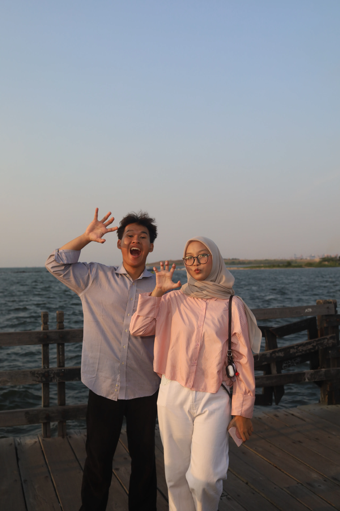

Diputar dari hati ke hati
Dibuat dengan perasaan, khusus untuk kamu

Untuk Uciiiiii
Ganti dengan nama kamu
0:00
0:00
1
Untuk Uciiiiii
Ganti dengan nama kamu
Bukan lirik — ini pesan asli
Tulis pesan kamu di sini...
— dari aku, untuk kamu